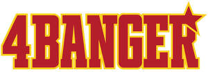

Trade Mark Journal No.2025/050 12 December 2025
UK00004302730 28 November 2025 (5,16,21,25,35,41)

- Class 5
- Air fresheners; car air fresheners; deodorising preparations for the air.
- Class 16
- Stickers; bumper stickers; adhesive stickers; car stickers; decorative stickers for vehicles and helmets; decals; wall decals; posters; printed posters; notepads; printed matter.
- Class 21
- Drinking bottles; water bottles; sports bottles; travel mugs; mugs; drinkware; tumblers; cups; household containers.
- Class 25
- Clothing; sports clothing; casual clothing; leisurewear; hoodies; sweatshirts; T-shirts; tops; shorts; jackets; windproof clothing; waterproof clothing; hats; caps; beanies; headbands; wristbands; belts; gloves; socks; footwear.
- Class 35
- Retail and online retail services in relation to clothing, stickers, decals, posters, drinkware, bottles, mugs and car accessories; promotion of goods and services via social media; advertising and marketing services; organisation of promotional events; brand promotion services; providing consumer information about automotive lifestyle products and events.
- Class 41
- Provision of audio and visual media via communications networks; provision of entertainment services through television, video films and publications; publication of texts in electronic media; information about entertainment and entertainment events provided online; provision of online information relating to audio and visual media; production of videos, reels and digital media for social media platforms; provision of online non-downloadable videos and audiovisual content; production of digital content for entertainment purposes; production of online video content relating to automotive culture; entertainment services provided via social media; organisation of entertainment events; organisation of automotive rallies, tours and racing events; organisation of motor racing and vehicle racing events; organisation of car meets, car shows and automotive lifestyle exhibitions; organisation of sporting events; production of sporting events for film; organisation of live entertainment experiences and fan events.
4BANGER LTD